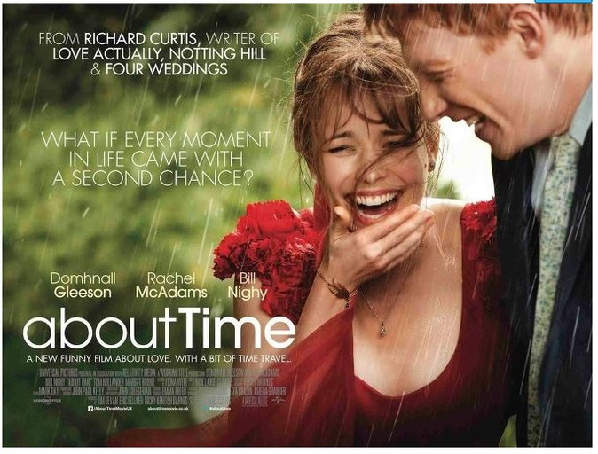

<!DOCTYPE html>
<html>
  <head>
    <meta charset="utf-8">
    <title>Welcome to Chan's world!</title>
    <link rel="stylesheet" href="chan.css">
  </head>
  <body>
    <header>
      <nav>
        <ul>
          <li><a href="chan.html">Home</a></li>
          <li><a href="favorite.html">Favorite</a></li>
          <li><a href="game.html">Game</a></li>
        </ul>
      </nav>
    </header>
    <h1>좋아하는 것은...</h1>
    <main>
      <div class="song uKnow">
        <p>
          Keala Settle, The Greatest Showman Ensemble-This Is Me
        </p>
        <audio autoplay controls>
          <source src="thisIsMe3.mp3" type="audio/mp3">
        </audio>
      </div>
      <div id="grid4">
        <div>
          
        </div>
        <div class="divline2" id="hellgrid4">
          <div></div>
          <div>
            <p>
              제 인생영화는 어바웃 타임입니다. 이 영화같은 사랑과 행복을 꿈꿉니다.
            </p>
          </div>
          <div></div>
        </div>
      </div>
      <div id="grid5">
        <div class="divline" id="hellgrid5">
          <div></div>
          <div>
            <p>
              혼자 살다보니 이것저것 요리해보는 취미가 생겼습니다.<br>
              제가 제일 잘하는 요리는 차돌된장찌개와 깻잎 장아찌입니다.<br>
              나중에 개발자가 되어서 제가 만든 차돌된장찌개에 이슬잔 기울이실분
              있으시면 손들어주실래요?^^
            </p>
          </div>
          <div></div>
        </div>
        <div>
          
        </div>
      </div>
      <div id="grid6">
        <div>
          
        </div>
        <div class="divline2" id="hellgrid6">
          <div></div>
          <div>
            <p>
              안어울린다고 생각하실진 몰라도 저는 조용한 곳에서 책읽는 것을 좋아합니다.<br>
              하지만 당분간은 열심히 코딩공부하느라 기분좋은 책냄새 못맡을 것 같아요..TT
            </p>
          </div>
          <div></div>
        </div>
      </div>
    </main>
    <footer>
      <a href="https://velog.io/@dbgnlcks34" target="_blank">Velog</a><br>
      <a href="https://github.com/chan-97" target="_blank">Github</a>
    </footer>

  </body>
</html>
